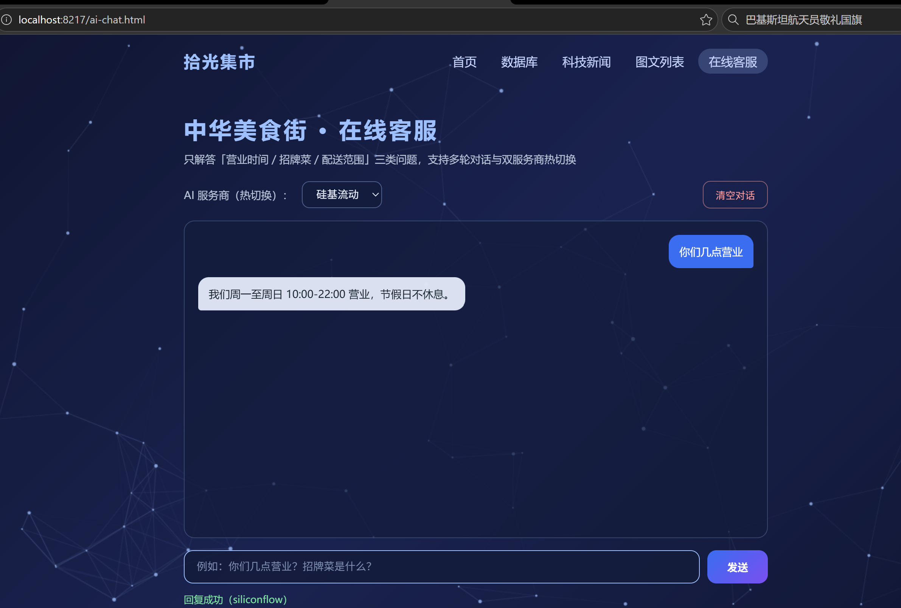
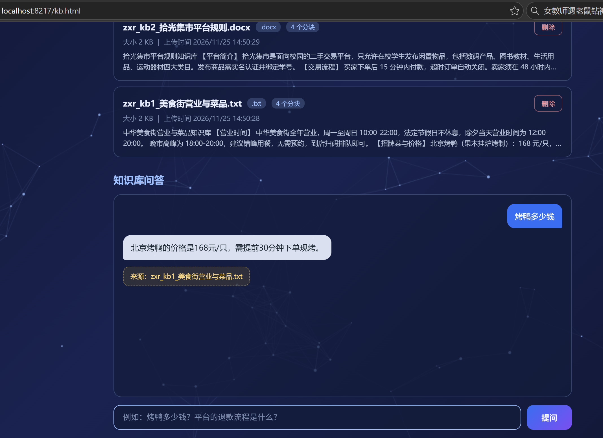
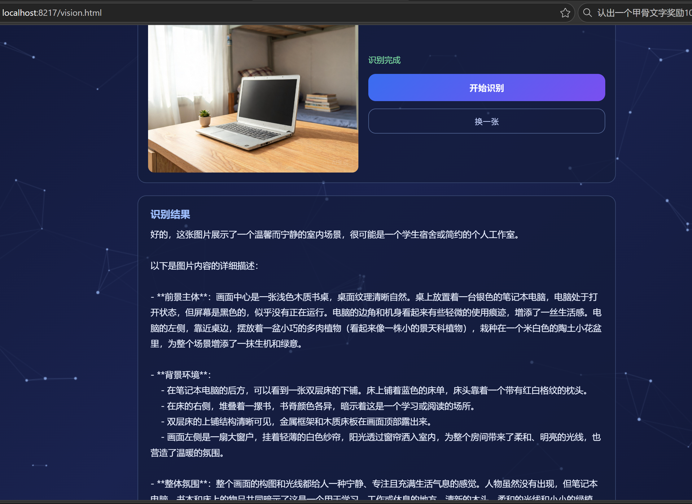
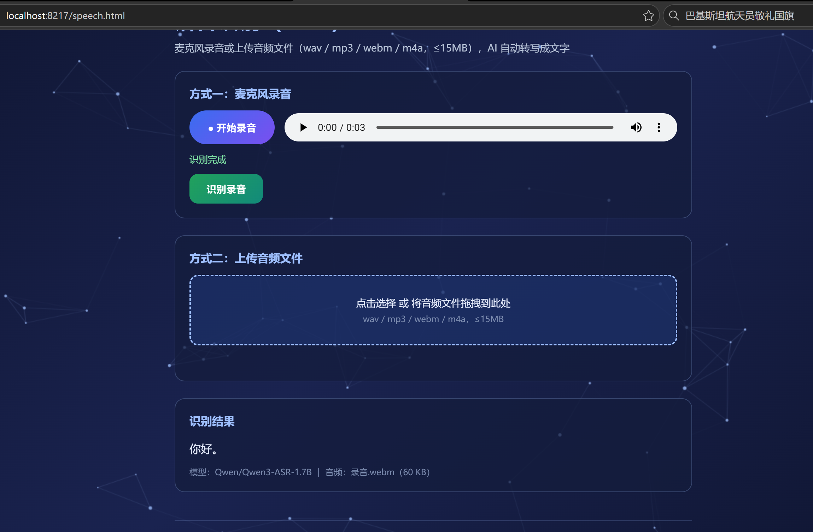

AI 功能截图展示
四大 AI 功能运行实况截图（点击图片可查看原图）

01
中华美食街 · 在线客服
多轮对话 + 双服务商热切换（硅基流动 / 七牛），白名单人设只回答营业时间、招牌菜、配送范围三类问题
打开页面 →

02
知识库问答（RAG）
上传 doc/docx/ppt/pdf/txt 构建专属知识库，检索 Top4 知识块拼入提示词后回答，并标注来源
打开页面 →

03
图像识别
上传图片由视觉模型 Qwen3-VL 自动生成中文描述，准确识别书桌、笔记本电脑、绿植与宿舍环境细节
打开页面 →

04
语音识别（ASR）
麦克风录音或上传音频文件，Qwen3-ASR 自动转写成文字，录音 3 秒"你好"即识别成功
打开页面 →